| SOURCE | TITLE| IMAGE MATCH | click to source page |
| GetArchive | 14 1968 stamps of sharjah Images: PICRYL - Public Domain Media Search Engine Public Domain Search | 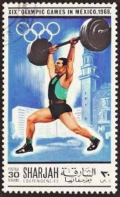 |
| eBay | FUJEIRA MICHEL#1115 MNH OLYMPICS SUMMER 1972 MUNICH WEIGHTLIFTING EVENT) | eBay | 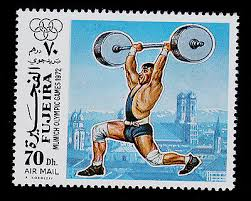 |
| eBay | Russian Barbell | eBay | 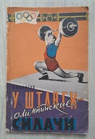 |
| Amazon.com | Amazon.com: Reglamento de Pesas (Spanish Edition): 9789583000430: Perea, Tucídides: Libros | 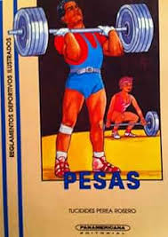 |
| Xabusiness.com | C116 Scott 863-873 2nd National Games of PRC - China Stamps | 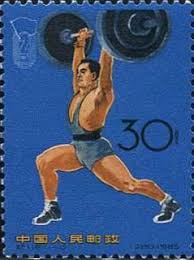 |
| Shutterstock | 2+ Thousand Olympic Games Of Munich Royalty-Free Images, Stock Photos & Pictures | Shutterstock | 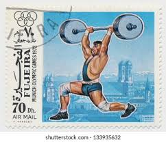 |
| Alamy | AFGHANISTAN - CIRCA 1985: a stamp printed in Afghanistan shows Immunization, International Child Survival Campaign, circa 1985 Stock Photo - Alamy | 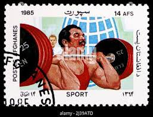 |
| HipStamp | 1972 Republic of Haiti: Munich'72 Olympic Souvenir Sheet | Caribbean - Haiti, Stamp / HipStamp | 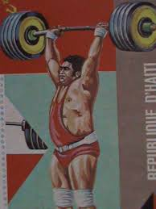 |
| GetArchive | Stamps of Germany (BRD) 1968, MiNr 564 - PICRYL - Public Domain Media Search Engine Public Domain Image | 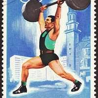 |
| russian matchbox label | 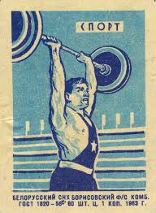 | |
| Etsy | Vintage Outside Art Weightlifter Painting, World's Strongest Man - Etsy | 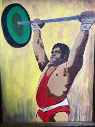 |
| eBay | Chine N°1666 Weightlifting Used Date Stamp | eBay | 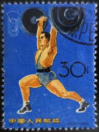 |
| Stark Center for Physical Culture and Sports | James (Jim) Sanders Collection | 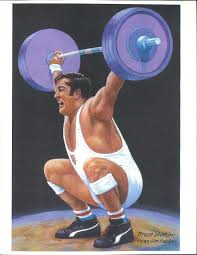 |
| Colnect | Stamp: Khadr El Touni (Egypt(Famous Egyptian Weightlifters (2002)) Mi:EG 2094,Sn:EG 1820b,Yt:EG 1725,Sg:EG 2245,Nil:EG C1548 📮 | 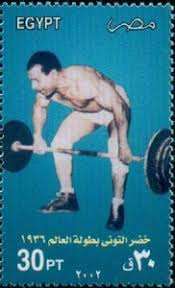 |
| Braichposters | Arabic BodyBuilding Magazine – Tagged "50s" – Braichposters | 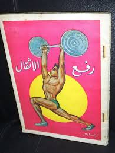 |
| eBay | OLYMPIC, ROME 1968, MAXIMUM CARD, VG | eBay | 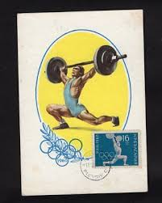 |
| eBay | HAITI C390B - Munich Olympics "David Berger - Weight Lifting" (pc35364) | eBay | 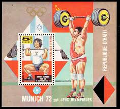 |
| eBay | VTG Strength & Health Magazine November 1983 Vol 51 #6 Lou & Carla Ferrigno | eBay | 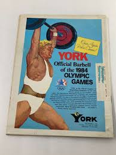 |
| Shutterstock | Vintage Weight Lifting: Over 4,360 Royalty-Free Licensable Stock Photos | Shutterstock | 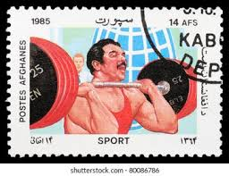 |
| Dreamstime | Weightlifting editorial stock photo. Image of aged, philately - 111858318 | 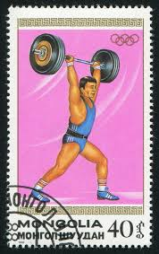 |
| Golden Age Posters | 1974 Seventh Asian Games Poster Weightlifting Tehran Iran – Golden Age Posters | 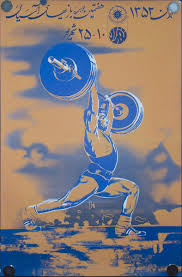 |
| eBay | Summer Olympic Games Haiti (67) Block Cancelled | eBay | 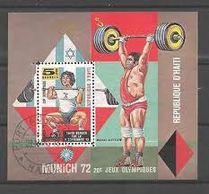 |
| Prabook | Prabook | 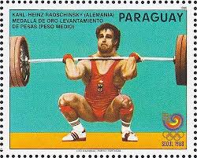 |
| Dreamstime.com | Postage Stamp Printed in Iraq Shows Weight Lifting, Summer Olympics 1968, Mexico City Serie, Circa 1969 Editorial Photography - Image of mail, letter: 179881227 | 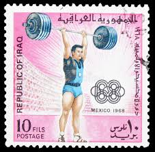 |
| eBay | Weightlifting Weight Lifting Sports Fab Card Collection | eBay | 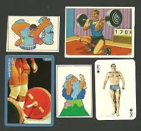 |
| Storm the World Records! Circa 50s : r/PropagandaPosters | 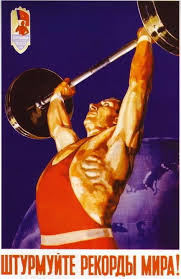 | |
| thenerdyweightlifter.com | strength sports – The Nerdy Weightlifter | 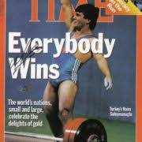 |
| Braichposters | Products – Page 552 – Braichposters | 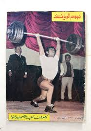 |
| MutualArt | Gherman Komlev | 1988 Olympics - Boxing (1988) | MutualArt | 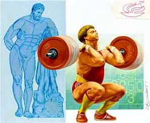 |
| Tarbi - U.S.A. | Facebook | 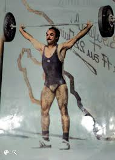 | |
| The Internet Antique Shop | Muscular Development-august 1983-jeff Everson | 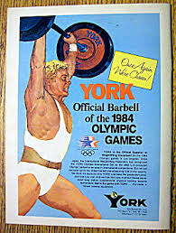 |
| Beauty Without Surgery South Korea is often called the “plastic surgery capital of the world” but let's look at what that really means. It's true that South Korea has one of the | 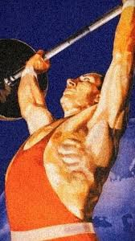 | |
| eBay | 1967 Lebanese Arabic Magazine Noujoum Alriyadah Body Building Lot 3 نجوم الرياضة | eBay | 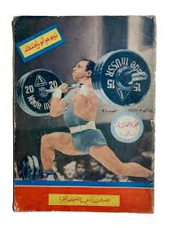 |
| PictureYourDreams | 1984 Summer Olympics - Los Angeles, California - 'Weight Lifting' Vint – PictureYourDreams | 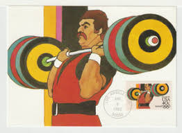 |
| Avion Thematics | Avion Thematics Stamps | Search for stamps on Olympic+1972 | 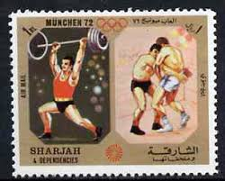 |
| Pixels Merch | Weight Lifting Champ Coffee Mug by Long Shot - Pixels Merch | 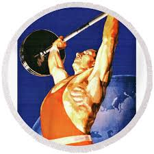 |
| TouchStamps | Souvenir Sheet: Naim Suleymanoglu, Turkey, weight lifting (Nevis 1992) - TouchStamps | 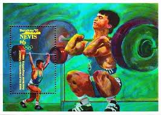 |
| HipStamp | Afghanistan Stamp-1962-Sc#599-602 4th Asian Olympic Games Jakarta Stamp SET VF | Asia - Afghanistan, General Issue Stamp / HipStamp | 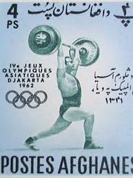 |
| LiveJournal | Nurikian (Bulgaria) | 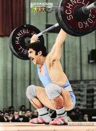 |
| HipPostcard | Weight Lifting Stamp 1984 Summer Olympics Los Angeles California | Topics - Coins & Stamps - Stamps, Postcard / HipPostcard | 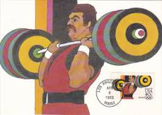 |
| eBay | China, Peoples Republic Stamp 872 - Weight Lifting | eBay | 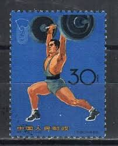 |
| eBay | VTG Strength & Health Magazine March 1984 Vol 52 #2 Cory & Jeff Everson | eBay | 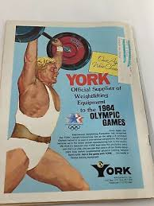 |
| Vintage Strongman Poster | 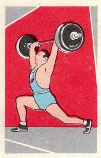 | |
| PicClick | BODY BUILDING, MUSCLE Magazine, Dr. Glenn Bishop, 1960 $14.95 - PicClick | 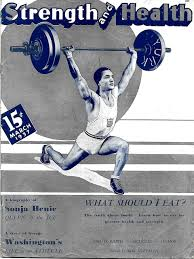 |
| StrongFirst | Former StrongFirst Certified Master Instructor | 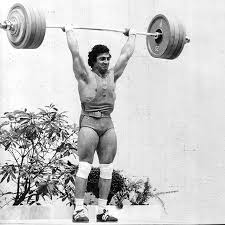 |
| Nasrollah Dehnavi added a new photo. - Nasrollah Dehnavi | 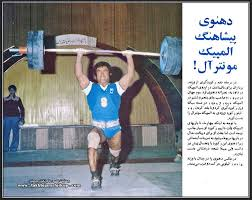 | |
| LiveJournal | Vladimir Pushkarev (USSR): chidlovski — LiveJournal | 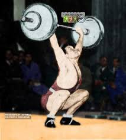 |
| Bodybuilding with dumbbells and barbells | 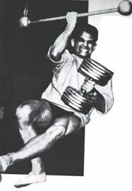 | |
| eBay | CAMBODIA #969 1989 SUMMER OLYMPICS '92 BARCELONA MINT VF NH O.G CTO S/S | eBay | 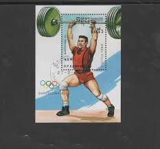 |
| X | Sergey Arakelov: 1979 Friendship Cup in Leningrad - https://t.co/86RwzzLTTA | 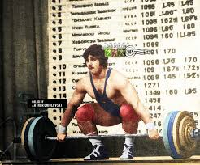 |
| eBay | SC532 1977-79 SPORTSCASTERS WEIGHTLIFTING ALEXEIEV | eBay | |
| eBay | Rare lot 6 bodybuilding sport stars Magazine مجلة نجوم الرياضة 6 اعداد مميزة | eBay | |
| Chuck Vinci (USA) Wins the Last U.S. Olympic Gold Medal : r/weightlifting | ||
| AbeBooks | Enzo Tortora e "Telematch". by MOLINO W. -: (1957) Magazine / Periodical | Libreria Piani | |
| LiveJournal | Mincho Pashov (Bulgaria): chidlovski — LiveJournal | |
| Etsy | Vintage Outside Art Weightlifter Painting, World's Strongest Man - Etsy Sweden | |
| eBay | Original CUBAN Silk-screen Poster for Cuba Movie About USSR Weightlifting Event | eBay | |
| IndiaMART | Vintage Air India Cargo Posters at ₹ 2500/piece | Antique Collectible in Mumbai | ID: 2854545320288 | |
| X | One-Hand Lifting By Legendary El Sayed Nosseir of Egypt - https://t.co/rvxKGu7I0n |